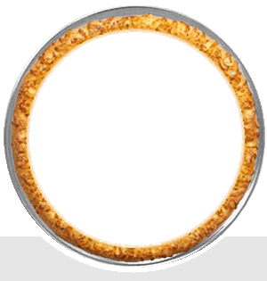

Calabresa Arretada

Portuga gente boa
Frangão tudibão

Lombinho só love

Mussarela cê loko

A premiada
É uma satisfação atendê-los. Venham nos conhecer!
Rua Bahia, nº 99, Salvador - BA
(71)9000-0000
Seg a Sex 18 às 23h
Prêmio Melhor Pizza Napolitana 2020
Seguimos todos os protocolos sanitários da OMS